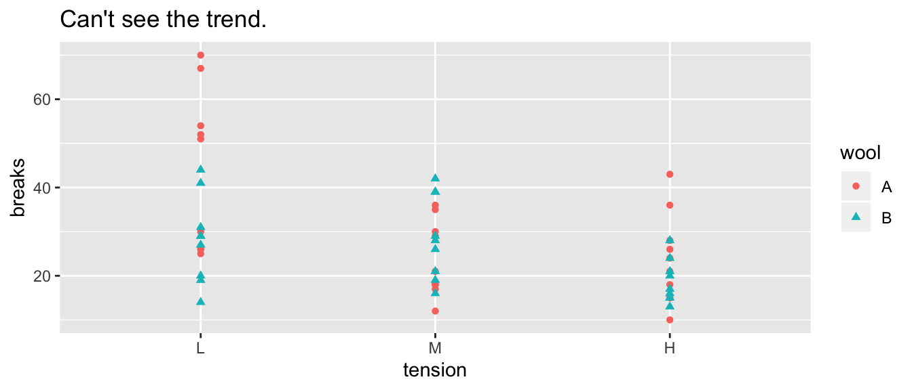
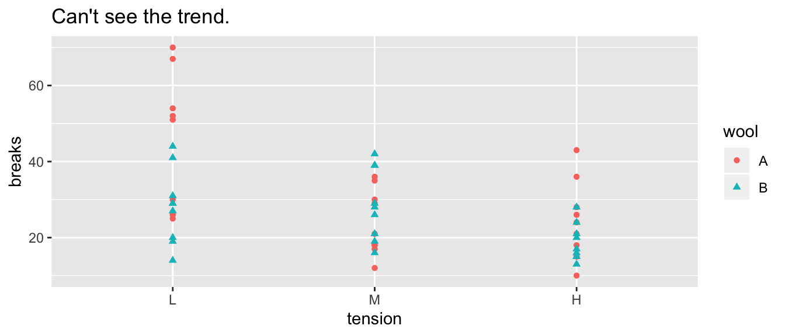
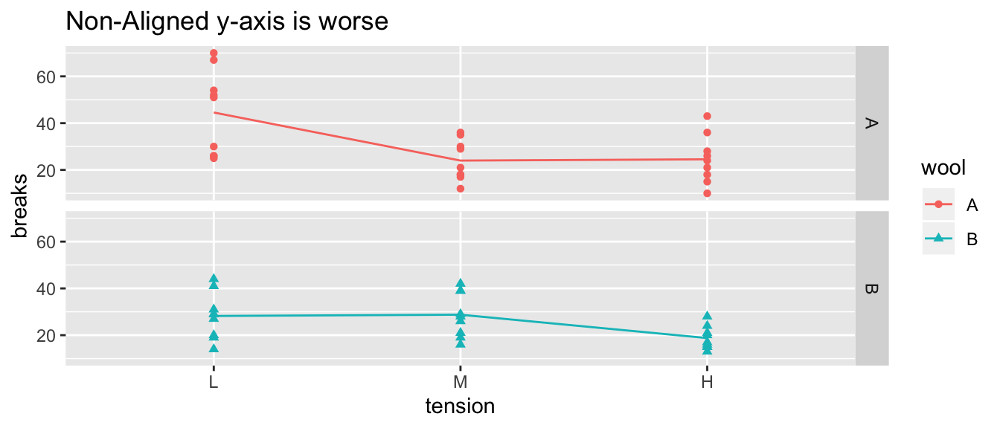
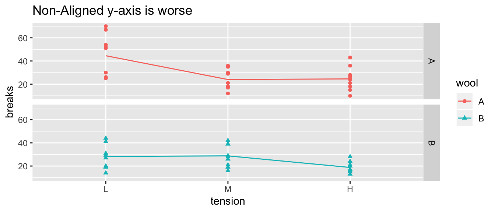
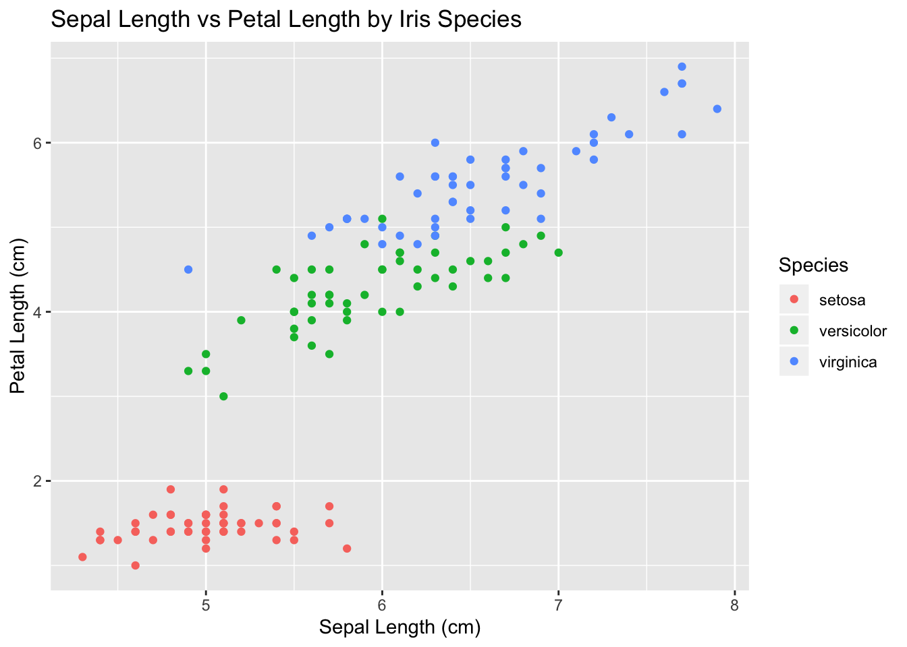
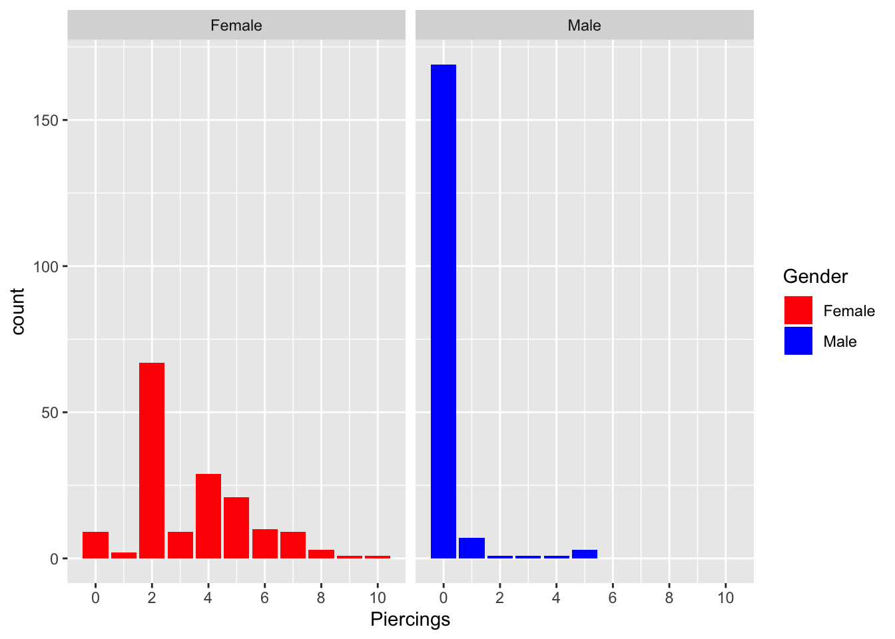
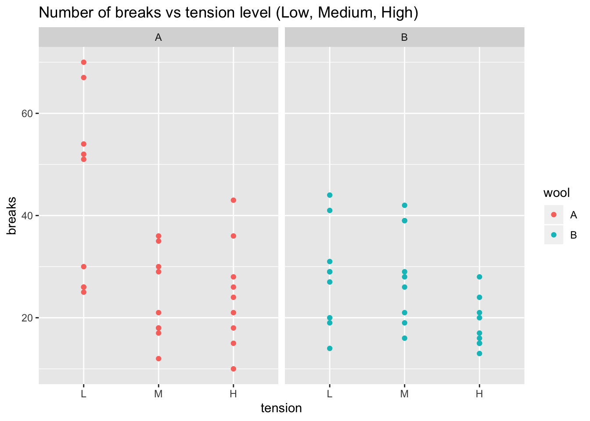

Chapter 1 Week 1
1.1 Introduction
1.1.1 Initial thoughts.
- What is data?
- Why visualize it?
- See relationships that raw data obscure.
- Cognative work to translate raw numbers into context between other data points are already done for you.
- Good graphics translate particular numerical relationships into physical relationships which our brains are really good at processing.
1.1.2 Amazing Graphics
UK Drug Poison These are the data from the UK related to drug overdose and misuse. Farther down the page gives a similar graph on suicide.
1.1.3 Bad Graphs
While the New York Times is generally really quite good, this graph is quite misleading. Another view of the data is more fair, although the still depressing.
I feel compelled to show a bad 3-d Excel graphic as well.
Reuter’s infamous gun deaths in Florida chart.
An amusing case where a pie chart is ridiculous. This is the result of a survey that asks what pizza toppings are liked. In particular, a person can pick more than one topping and so the percentages don’t sum to 100%.
{kind=link}
{kind=link}
1.1.4 Tableau or ???
- Tableau is a nice program that reads in data and can produce some very nice graphics and dashboards.
- Licensing Questions?
- What are dashboards? A series of related graphs, often with controls that allow you to explore the data.
- Britian’s Coal Use 2015-2019
1.2 EPTs and Gestalt
- Some Visual tasks are easier than others.

From Alberto Cairo’s “The Truthful Art”
From Hadley Wickham’s Stat 405 at Rice. (Slides 34 - 40) Effective Visualizations
1.2.1 Groupings / Gestalt
The way we organize our graphics can lead a viewer to create mental groups of marks.
Winona State’s Data Visualization PowerPoint
Slides 30-50
- Enclosures
- Connections
- Proximity
- Similarity (color/shape)
Example: Warpbreaks While spinning wool into thread, if the tension on the wool isn’t correctly set, the thread can break. Here we compare two different types of wool at three different tensions.
 

 

1.2.2 “Color” Scales
Defining Color really has three different attributes (From Wikipedia).
1.2.2.1 HSV Scale
- Hue: The attribute of a visual sensation according to which an area appears to be similar to one of the perceived colors: red, yellow, green, and blue, or to a combination of two of them.
- Saturation: The “colorfulness of a stimulus relative to its own brightness”
- Value: The “brightness relative to the brightness of a similarly illuminated white”

HSV Cylinder from Wikipedia
- Hue is appropriate for categorical variables.
- Saturation and/or Value is approriate for a quantitative variable scale.
Neither R nor Tableau make it particularly easy to map these aspects, so we won’t get too deep into it.
1.3 Practicum #1
1.3.1 How to Store Data
Data is commonly stored in spreadsheets.
- Columns are variables of interest
- Rows are observations.
Example: A dataset we’ll call iris which has 150 observations of three species of iris. Each observation measured the length and width of both the petals and sepals.
| Sepal.Length | Sepal.Width | Petal.Length | Petal.Width | Species |
|---|---|---|---|---|
| 5.1 | 3.5 | 1.4 | 0.2 | setosa |
| 4.9 | 3 | 1.4 | 0.2 | setosa |
| 4.7 | 3.2 | 1.3 | 0.2 | setosa |
| 4.6 | 3.1 | 1.5 | 0.2 | setosa |
| 5 | 3.6 | 1.4 | 0.2 | setosa |
| 5.4 | 3.9 | 1.7 | 0.4 | setosa |
Example: A dataset we’ll call GradeBook that has records of how well a student performed on exams. I’ll refer to this storage as the wide orientation.
| StudentID | Exam 1 | Exam 2 | Final Exam |
|---|---|---|---|
| 1 | 87 | 87 | 81 |
| 2 | 91 | 88 | 85 |
| 3 | 88 | 79 | 92 |
| 4 | 91 | 97 | 94 |
| 5 | 100 | 83 | 90 |
| 6 | 85 | 79 | 81 |
Or I could have stored the information in the following manner, which I’ll refer to as the long orientation.
| StudentID | Assesment | Score |
|---|---|---|
| 1 | Exam 1 | 91 |
| 1 | Exam 2 | 90 |
| 1 | Final Exam | 87 |
| 2 | Exam 1 | 73 |
| 2 | Exam 2 | 76 |
| 2 | Final Exam | 53 |
1.3.2 Tableau
1.3.2.1 Task 1: Dragging variables onto destination
First we’ll make a scatterplot with some colors.

The iris data I used for this graph is available here: data: https://raw.githubusercontent.com/dereksonderegger/141/master/data-raw/iris.csv
1.3.2.2 Task 2: Modifying how a variable is displayed
https://raw.githubusercontent.com/dereksonderegger/141/master/data-raw/Lock5_GPAGender.csv

1.3.2.3 Task 3: Reorder categorical variable levels
https://raw.githubusercontent.com/dereksonderegger/141/master/data-raw/warpbreaks.csv
